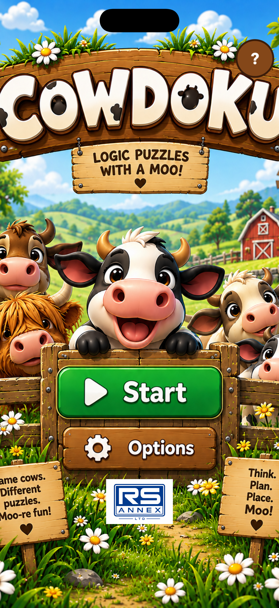
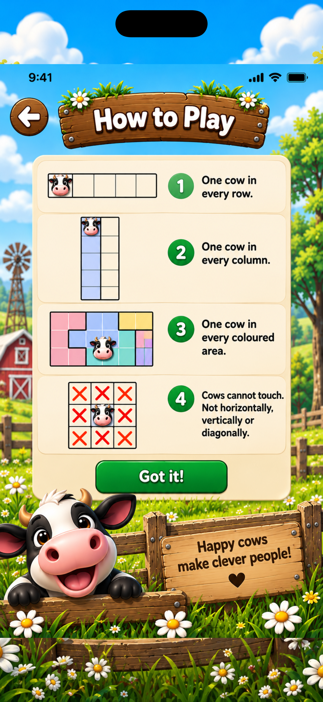
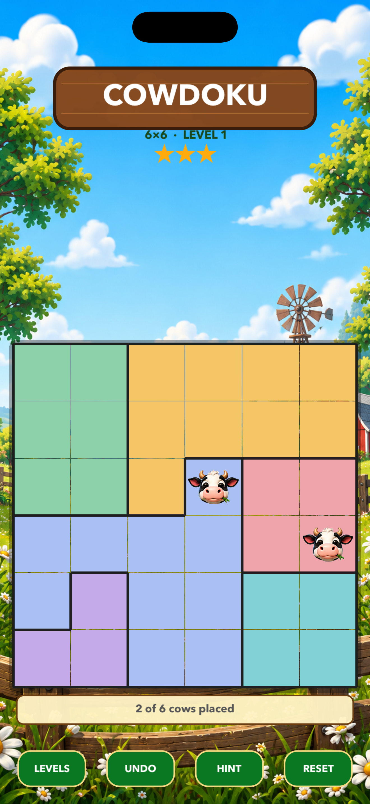
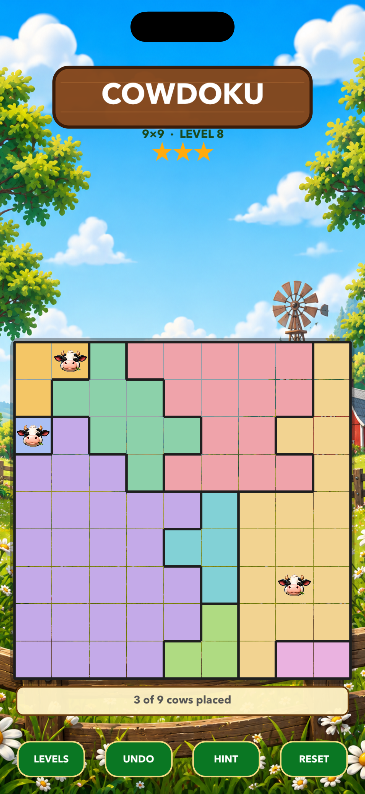

🐄
Place the herd
Put one cow in every row, every column and every coloured paddock.
Find the perfect paddock for every cow. Place exactly one cow in each row, column and coloured area—without letting any two cows touch, even diagonally.
Every puzzle has a logical path from its starting cow to the final square—no blind guessing required.
Put one cow in every row, every column and every coloured paddock.
Cows cannot touch horizontally, vertically or diagonally. Mark impossible squares as you reason.
Begin with three stars. A wrong placement costs one, so careful deductions earn the perfect result.
Bright farmyard presentation, clear boards and quick touch controls designed for portrait play.




Start with approachable 6×6 boards, then work up through 7×7, 8×8 and 9×9 challenges.